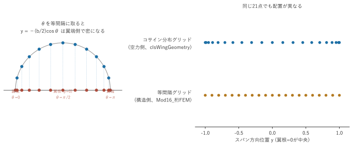
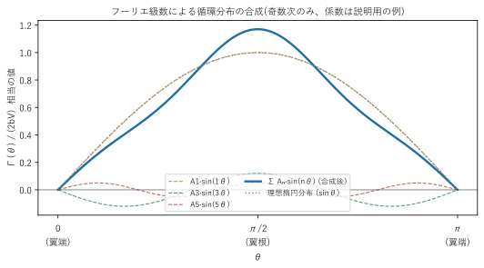

空力理論編 — 揚力線理論(Prandtlの吹き下ろし理論とGlauertのフーリエ級数解法)¶
(注: 「Prandtl-Glauert法」という略記は、圧縮性補正として知られる別の理論(Prandtl-Glauert変換)と紛らわしいため、本ドキュメントでは使いません)
このプログラムの空力解析は、Prandtlの揚力線理論をGlauertのフーリエ級数法で数値的に解く、という古典的な手法に基づいています。翼型理論(2次元)と有限翼理論(3次元)の橋渡しとなる理論です。大学の航空力学基礎(2次元翼理論、揚力係数Clと迎角の関係など)は既知として、ここではこのプログラムが実際に何を仮定し、何を解いているかに絞って説明します。
1. 揚力線理論の基本アイデア¶
有限翼(実際の主翼のように、有限のスパンを持つ翼)は、翼端で圧力差が解消されるため、翼端から後方へ翼端渦(トレーリングボルテックス) が流れ出します。この渦のシートが翼の後方に作る誘導速度(下向きの流れ、吹き下ろし)が、翼の各断面が「実際に感じる」流入角を変えてしまいます。
これにより、各スパン位置での有効迎角は、機体全体の姿勢から決まる幾何迎角より小さくなります。
有効迎角 = 幾何迎角 − 誘導迎角
- 幾何迎角: 主翼の取付角+ねじり下げ角で決まる、その断面が「向いている」角度
- 誘導迎角: 吹き下ろしによって流入角が下向きに傾く分。吹き下ろしが強いほど大きい
局所揚力係数は、有効迎角を使って2次元翼型と同じ関係式(Cl = a₀×(α_eff − α_L0))で決まります。ここでa₀(2次元揚力傾斜)やα_L0(ゼロ揚力角)は、Reynolds数に応じて変化する翼型固有のデータで、実験・解析結果をテーブル化したものを参照します(§6)。
問題は、「吹き下ろしの強さ」自体が「揚力分布(＝循環分布)」に依存し、その揚力分布は「有効迎角」に依存し、有効迎角は「吹き下ろし」に依存する、という循環参照になっていることです。これを解くのが揚力線理論の核心です。
2. 循環のフーリエ級数展開とコサイン変数変換¶
Prandtlの理論では、スパン方向の循環分布Γ(y)を、変数変換 y = -(b/2)cos(θ) (θ: 0〜π、bはスパン)を使ってθの関数として、次のフーリエ正弦級数で表します。
Γ(θ) = 2bV Σ Aₙ sin(nθ) (n = 1, 2, 3, ...)
この変数変換を使うと、翼根(y=0)がθ=π/2、両翼端(y=±b/2)がθ=0, πに対応します。θを等間隔に刻むと、対応するy座標は翼端付近ほど密に、翼根付近ほど粗くなります(コサイン分布)。翼端付近は循環の変化が急なので、この配置は数値精度上有利です。

上の右側の図のように、同じ21点でも「コサイン分布グリッド」(空力側)と「等間隔グリッド」(構造側、後述01_全体アーキテクチャ.md参照)では点の並び方がまったく異なります。この違いが、空力解析と構造解析の間でスプライン補間による橋渡しが必要になる理由です。
循環分布は奇数次のフーリエ項だけの合成で近似されます。理想的な楕円分布(スパン効率100%)に対して、高次項がどれだけ「デコボコ」を加えるかのイメージは次の通りです(下図の係数は説明用の例であり、実際の解析値ではありません)。

左右対称の翼(このプログラムが前提とする、左右同じ形状の主翼)では、循環分布も左右対称になります。フーリエ級数で左右対称な分布を表すには、奇数次の項(n=1,3,5,...)だけで十分です(偶数次の項は反対称な分布に対応するため、左右対称な荷重では係数がゼロになる)。このプログラムが求めるのは奇数次の係数Aₙだけで、これによって未知数の数を半分に減らしています。
3. モノプレーン方程式(フーリエ係数の連立方程式)¶
各スパン位置(θ)で「局所揚力係数を2つの異なる方法で表した式が一致する」という条件を立てると、次の積分方程式(モノプレーン方程式、Glauertの方程式とも呼ばれる)が得られます。
μ(θ)[α(θ) − α_L0(θ)] = Σ Aₙ sin(nθ) [ n·μ(θ)/sin(θ) + 1 ]
ここで μ(θ) = c(θ)·a₀(θ) / (4b) は、局所翼弦・局所揚力傾斜・スパンから決まる無次元パラメータです。
これを、θ軸上のK個の制御点(コサイン分布グリッドの片側半分、翼根〜翼端)で満たすように要求すると、未知数A₁,A₃,...,A_{2K-1}(K個)に対するK元の連立一次方程式になります。行列で書けば
A・B = C (A: K×K行列、B: 未知のフーリエ係数ベクトル、C: 既知ベクトル)
の形になり、逆行列を使ってB = A⁻¹Cとして解けます。この行列を解く部分が、このプログラムの空力解析の核心の計算です(実装は03_空力実装編.md§2)。
4. 揚力係数・誘導抗力・スパン効率¶
フーリエ係数が求まると、翼全体の揚力係数と誘導抗力係数が、A₁と高次項の比だけから直接求まります。
CL = π・AR・A₁
CDi = CL² (1+δ) / (π・AR)
δ(デルタ)は高次のフーリエ項(A₃, A₅, ...)がA₁に対してどれだけ大きいかを表す量で、理想的な楕円分布(δ=0)からのズレを意味します。δが大きいほど、同じCLを出すのに必要な誘導抗力が大きくなり、非効率な翼になります。
スパン効率eはe = 1/(1+δ)で定義され、e=1が理想の楕円分布(最小誘導抗力)です。
5. 誘導迎角・有効迎角・揚力分布の復元¶
フーリエ係数Bₙが求まれば、制御点だけでなく翼全体の任意のスパン位置で、吹き下ろし速度・誘導迎角・局所揚力係数を計算し直せます。
w(θ)/V = Σ n·Aₙ sin(nθ)/sin(θ) (吹き下ろし速度の無次元化)
α_i(θ) = w(θ)/V (誘導迎角、ラジアン)
Cl(θ) = a₀(θ)・[α(θ) − α_L0(θ) − α_i(θ)] (局所揚力係数)
局所揚力係数に動圧と局所翼弦(に相当する面積分担)をかければ、スパン方向の揚力分布(局所ごとの揚力の大きさ)が得られます。
6. プロファイル抗力・モーメント係数(2次元翼型データの利用)¶
揚力線理論そのものは、翼型の厚みや形状による摩擦・圧力抗力(プロファイル抗力) や空力モーメントを直接は計算しません。これらは、各スパン位置の有効迎角と局所Reynolds数(局所翼弦・飛行速度・動粘性係数から決まる)を使って、あらかじめ用意した2次元翼型の実験・解析データ(CFDや風洞試験由来のCd-α、Cm-α特性)をテーブル参照して求めます。
主翼が翼根から翼端にかけて複数の翼型を使い分けている場合(このプログラムでは各スパン位置で最大2種類の翼型を線形補間でブレンドする)、その2つの翼型のCd/Cmを個別にテーブル参照し、ブレンド比で加重平均します。
全機の抗力係数は、誘導抗力(§4)とプロファイル抗力(このテーブル参照分)の和です。
7. 圧力中心・区分重心とピッチングモーメント¶
局所的な圧力中心位置Cp(翼弦に対する割合)は、局所揚力係数と局所モーメント係数の関係(モーメント基準点を1/4翼弦に取る慣例のもとでCp = 0.25 − Cm/Cl)から逆算できます。
用語注意: 「圧力中心(center of pressure)」と「空力中心(aerodynamic center)」は別の概念です。圧力中心はここでのCpのように迎角によって位置が動く点、空力中心はモーメント係数が迎角によらずほぼ一定になる固定点(多くの翼型で1/4翼弦付近)を指します。
Cp = 0.25 − Cm/ClはCl・Cmの比から求まる値であり迎角が変われば動くため、これは圧力中心の式です。以前の版でこの節を「空力中心」と誤って呼んでいたため、本節から「圧力中心」に訂正しています。
主翼全体のピッチングモーメント(縦揺れモーメント)は、各スパン位置の揚力が桁位置(構造上の基準点、圧力中心とは別)からどれだけズレた位置に作用しているか(モーメントアーム)を積算して求めます。この値は、主翼が縦の釣り合い(トリム)にどう寄与するかを見るのに使われます。
8. 飛行速度のつり合い(トリム)反復¶
人力飛行機は、機体重量(構造重量+パイロット体重)と揚力がちょうど釣り合う速度で水平飛行します。しかし揚力係数CLはこの理論では「ある飛行速度Vでの値」としてしか求まらないため、
- 適当な初期飛行速度V₁を仮定して揚力線理論を解く
- 得られた総揚力(重量換算)と実際の機体重量を比較する
- 一致していなければ、揚力係数を保ったまま釣り合うように飛行速度を更新する(
V ∝ 1/√CLの関係を使う) - 収束するまで1〜3を繰り返す
という反復(トリムループ)を行っています。この反復も含めて「揚力線理論を解く」という1つの関数にまとまっているのが、このプログラムの構成上の特徴です(実装は03_空力実装編.md§6)。
次に読むもの¶
これらの理論が実際のVBAコード(Mod03〜Mod09)のどこにどう対応しているかは、03_空力実装編.mdで説明します。